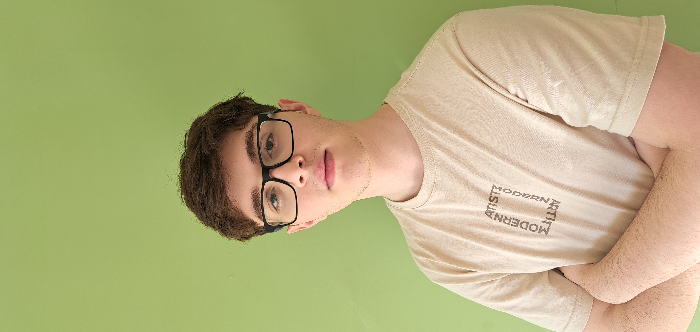

Nossa equipe

Caue Meleck Silva
Caue Meleck Silva
Fundador da SOS Animal e sócio da Innov8tors. Graduante de Engenharia de Software, Caue é um amante dos animais e o grande idealizador do projeto!


João Vitor Ferrari
João Vitor Ferrari
Fundador da SOS Animal e sócio da Innov8tors.
Por meio da sua formação acadêmica e currículo extenso, João é o principal tecnólogo do projeto e designer!

Rafael Kakizuko Shimomura
Rafael Kakizuko Shimomura
Fundador da SOS Animal e sócio da Innov8tors.
Rafael é o responsável pela revisão da construção do projeto e também é responsável pela parte de documentação.